Documentacion de razas de perros
El perro o perro doméstico o también llamado can5 es un mamífero carnívoro de la familia de los cánidos, que constituye una subespecie del lobo. Un estudio publicado por la revista de divulgación científicaNature revela que, gracias al proceso de domesticación, el organismo del perro se ha adaptado6 a cierta clase de alimentos, en este caso el almidón.7 Su tamano o talla, su forma y pelaje es muy diverso según la raza. Posee un oído y olfato muy desarrollados, siendo este último su principal órgano sensorial. En las razas pequenas puede alcanzar una longevidad de cerca de 20 anos, con atención esmerada por parte del propietario, de otra forma su vida en promedio es alrededor de los 15 anos.
Se cree que el lobo gris, del que es considerado una subespecie, es el antepasado más inmediato. Las pruebas arqueológicas demuestran que el perro ha estado en convivencia cercana con los humanos desde hace al menos 9000 anos, pero posiblemente desde hace 14 000 anos. Las pruebas fósiles demuestran que los antepasados de los perros modernos ya estaban asociados con los humanos hace 100 000 anos. Las investigaciones más recientes indican que el perro fue domesticado por primera vez en el este de Asia, posiblemente en China; sin embargo, es incierto si todos los perros domésticos provienen de un mismo grupo o si el proceso de domesticación se repitió varias veces.
Hay aproximadamente 800 razas —más que de cualquier otro animal— que varían significativamente en tamano, fisonomía y temperamento, presentando una gran variedad de colores y de tipos de pelo según la raza de perro. Tienen una gran relación con los humanos, para quien son animales de companía, animales de guardia, perros de trabajo, perros de caza, perros de aguas, galgos de carrera, perros guía, perros pastores o perros boyeros. En 2001, se estimaba que había 400 millones de perros en el mundo.
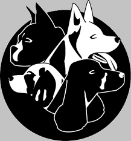
POMERANIA
El Pomerania es un perro muy pequeno (3 a 7 libras) conocido por su aspecto astuto y por tener la cola rizada.
Es popular porque es muy limpio, inteligente y fácil de entrenar. Si no son socializados con los seres humanos desde el principio estos pueden ser desconfiados con los extranos y los ninos, de hecho, muchos están mejor en casas donde sólo hay personas adultas. Es adaptable a la vida urbana y requiere una cantidad mínima de ejercicio.
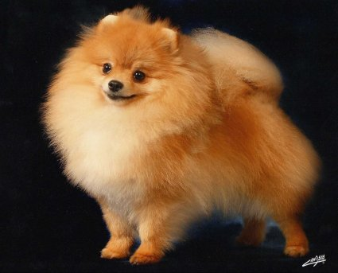
Atras
CHIHUAHUA
Pesa de 2 a 5 libras. El independiente Chihuahua es un excelente perro guardián pero puede llevar su asertividad demasiado lejos. No es conocido por ser paciente con los ninos y es desconfiado con los extranos, pero por alguna razón, muchos tienen un vínculo con los gatos.
Les gusta ver cuánto tiempo pueden ladrar sin interrupción y pueden ser ágiles.
Es un perro leal, carinoso y los que tienen esta raza dicen que su “actitud” no es más que una tapadera por temor a ser maltratado.
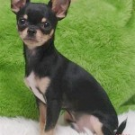
BOSTON TERRIER
El Boston Terrier se eleva sobre el Chihuahua teniendo de 15 a 22 libras.
Se trata de un perro para la familia y, aunque tiene algunos orígenes de perro matón, es tranquilo y se lleva bien con otros animales. El Boston es un masticador pesado por lo que es esencial mantener las cosas alejadas de él y proporcionarle juguetes para que los mastique.
Requieren ejercicio moderado y les encanta jugar.

PARSON RUSSELL TERRIER
A diferencia de las dos primeras razas de perros falderos mencionados, el Parson es un enérgico luchador.
Esté preparado para darle mucho ejercicio y juego porque si se aburre se meterá en muchos problemas.
Se trata de un pequeno de tamano mediano, con un peso de unos 13 libras y solía ser conocido como el Jack Russell Terrier, que ahora es una raza aparte.
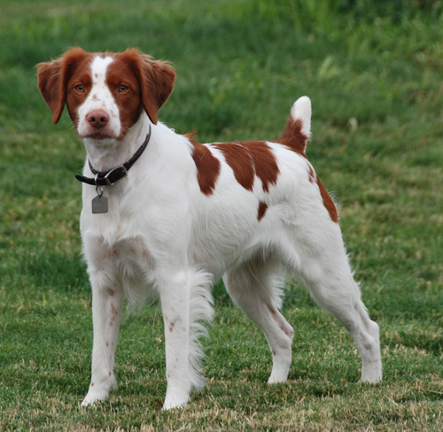
MALTES
El pequeno Maltés pesa entre 4 y 7 libras, es bien conocido por su carácter carinoso y amable.
Su blanco pelaje hermoso no aporta mucho y es más silencioso que muchos perros pequenos.
En general es bueno con los ninos. Debido a que siempre ha sido un perro faldero puede padecer de ansiedad por separación.
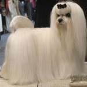
SHIH TZU
Cuando piensas en un ShihTzu, probablemente imaginas un pequeno perro de pelaje largo y sedoso que le hace flequillosen la cara.
El ShihTzu no derrama pelo pero tiene que ser peinado muy a menudo.
Es amable, alegre, se lleva bien con todas las criaturas incluidos los ninos y los gatos. Debido a que era originalmente un perro faldero de la realeza puede ser mimado fácilmente.
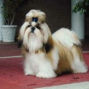
BICHON FRISE
Otro perro faldero, el Bichon, también es conocido por su pelajevoluminoso y blanco que se ve un poco como bolas de algodón.
Es fácil ver por qué es popular: es amable, adorable, carinoso y juguetón. Su peso es de alrededor de 11 a 14 libras y esel más grandes de las razas pequenas, pero todavía tiene un tamano muy manejable y puede estar bien tanto en un pequeno apartamento como en una casa grande.
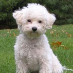
DACHSHUND MINIATURA
Aunque verás personas que cargan a estos perros de 10 a 12 libras, no son realmente un perrito faldero.
Los Dachshunds Miniatura son muy activos y, puesto que su propósito original era cazar alimanas, están siempre a la búsqueda de algo para tomar. No se llevan bien con los ninos a menos que sean socializados con ellos cuando aún son cachorros y son muy desconfiados con los extranos.
Pueden ser excelentes perros guardianes y buenos companeros, siempre y cuando los mantengan bien ejercitados.
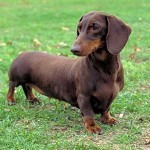
PEKINES
Una de las razas más antiguas, el Pekinés, comenzó su vida como un perro faldero de la realeza.
Se vieron seriamente afectados debido a que eran considerados sagrados y les ponían fin a sus vidas cuando su dueno moría para que pudieran acompanarlo al más allá.
También llamado el “perro del león”, esta raza es conocida por ser un tanto feroz a pesar de su pequeno tamano y de pesar de 8 a 14 libras. Son excelentes perros de companía para los que no son muy activos, pero tienden a desconfiar de otros animales y de los ninos.
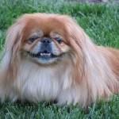
WESTIE
Esta raza ha sido siempre muy popular debido a su bravura para actividades deportivas y su voluntad de ser un perro faldero.
El Westie es alegre, audaz, enérgico, valiente y tiene mucha personalidad. Son felicescon solo ver a las personaspor lo que se ganan generalmente el corazón de todos en un instante. Se llevan bien con los ninos y otros perros pero persiguen a los gatos.
Requiere una gran cantidad de largos paseos y se ha conocido que pueden tocar la gaita muy bien(Es una broma) .
Beagle
De acuerdo con el American Kennel Club (AKC), beagles fueron quinta raza más popular de los Estados Unidos de perro en 2010.
Tienen cortos, abrigos de fácil cuidado, es amable, inteligente y bueno con los ninos, de acuerdo con la "Guía de ASPCA completa a los perros. " Beagles promedian 32,5 cm a 37,5 cm (13 a 15 pulgadas) de altura y 8,16 a 13,6 kg (18 a 30 lb).
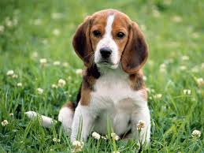
BOXER
El boxer es sexta raza más popular de Estados Unidos y el noveno más popular de Gran Bretana.
Hacen un promedio de altura 55 a 58,75 (de 22 a 23,5 pulgadas) de altura. Desarrollado en Alemania en la década de 1800 por el ahora prohibido "deporte" de hostigamiento del toro (donde un perro lucharía con un toro), el boxer hace un gran, aunque enérgico, mascota.
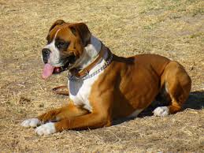
BULLDOG
También conocido como el Bulldog Inglés, criado en Inglaterra en la década de 1800, dogos originales eran mucho más alto y de piernas largas que los dogos modernos.
Ahora hacen un promedio de 30 a 40 cm (12 a 16 pulgadas) de altura y 22,7 kg (50 libras). A menudo tienen problemas de salud.
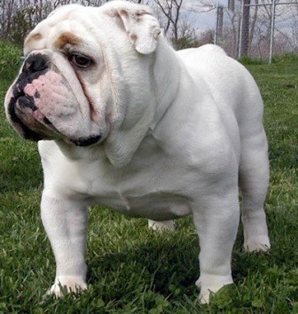
COCKER SPANIEL
El AKC considera tanto los cocker spaniels americanos e ingleses como dos tipos de la misma raza.
Combinados, son la 23 raza más popular en los Estados Unidos, pero el Inglés es la tercera raza de perro más popular en el Reino Unido. Criado originalmente para ser perros de caza, que ahora son en su mayoría las mascotas.
Ellos pueden promediar 33,5 a 42,5 cm (13 a 17 pulgadas) de altura y un peso de 6 a 11 kg (14 a 24 libras)..
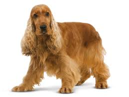
PASTOR AUSTRALIANO
A pesar del nombre, esta raza se originó en los Estados Unidos y es el 28 más popular en su país de origen.
Criado originalmente en la década de 1800 a las ovejas del rebano, el "Aussie" también sobresale en deportes del perro, como la agilidad y flyball.
Hacen un promedio de 55 a 57,5 cm (22 a 23 pulgadas) de altura y pesan desde 18 a 26 kg (40 a 65 libras), según la "Enciclopedia de razas de perros.

BRITTANY SPANIEL
Otro perro de caza que ha sido capaz de hacer la transición a la mascota de la familia, la Bretana se originó en Francia en la década de 1800. Promedios It 43,75-51,25 cm (17,5 a 20,5 pulgadas) de alto y pesa 13 a 18 kg (30 a 40 lb).
BORDER COLLIE
Esta es la décima raza de perro más popular en el Reino Unido.
Criado originalmente para arrear ovejas en los condados fronterizos implacables entre Escocia e Inglaterra, que se destacan en todos los deportes del perro.
Hacen un promedio de 45 a 57,5 cm (18 a 23 pulgadas) de altura, pero sólo pesan alrededor de 13 a 20 kg (30 a 45 libras).
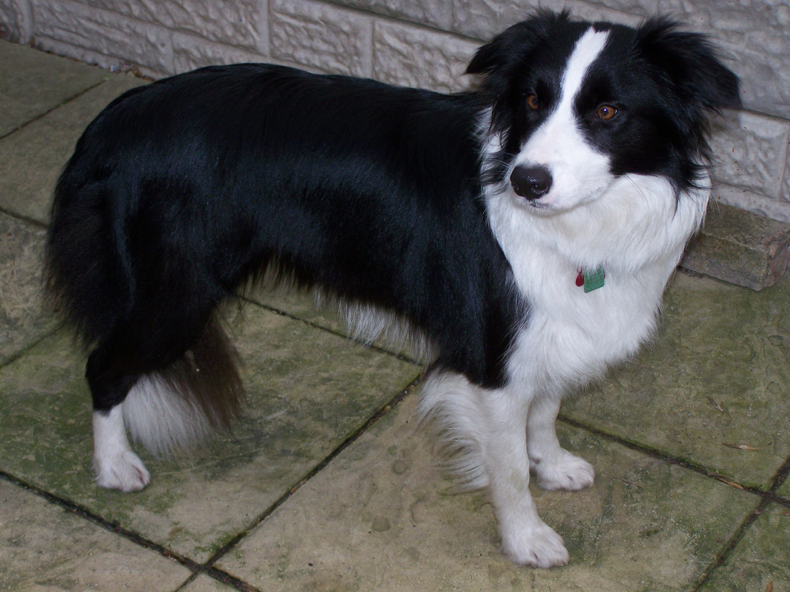
BULL TERRIER
El más famoso de bull terrier era Spuds Mackenzie de los Estados Unidos los anuncios de cerveza en la década de 1980.
Esta raza británica tiene como promedios 52,5 a 55 cm (21 a 22 pulgadas) de altura, con un peso de 22 a 31 kg (50 a 70 libras).
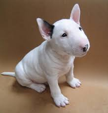
STAFFORDSHIRE BULL TERRIER
El "Staffie" es la quinta raza más popular en Inglaterra.
Criado originalmente para peleas de perros y hostigamiento del toro, se convirtieron en perros de guardia y las mascotas.
Ellos son apodados "perros ninera" en el Reino Unido porque son muy buenos con los ninos. Hacen un promedio de 42,5 a 47,5 cm (17 a 19 pulgadas) de altura y pesan alrededor de 13 a 18 kg (30 a 40 libras).

Irish Wolfhound
La raza más grande, es el Irish Wolfhound, también es famoso por ser una las razas de perro más carinosas y leales. Hay cientos de leyendas en el folclore sobre los Irish Wolfhound salvando la vida de sus duenos y sus seres queridos.
Es normal que esta raza tenga problemas de salud y una vida relativamente corta de unos 6 anos, aunque con los cuidados adecuados no es raro que llegen a los 8 o incluso 9 anos.
Lamentablemente esta raza de perros desarrolla cáncer de huesos, sufre problemas del corazón o dispepsia si vive más de 6 anos.
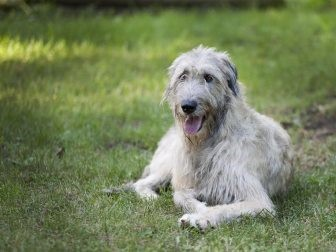
MASTIFF INGLES
Los Mastiff tienen el honor de ser de los perros más grandes del mundo. Aunque el tamano medio es inferior al Irish Wolfhound, los Mastiff pueden crecer más que ellos. Aunque los Mastiff se relacionan históricamente con el Reino Unido, son originarios de las montanas de Asia Central.
Los Mastiffs, son por lo general muy familiares, y tratarán muy bien a todas las personas y animales que formen parte de su “manada”. Esto incluye otros perros, gatos, ninos, etc… pero llevará un tiempo hacer que el perro se acostumbre a la presencia de una nueva persona o animal en la casa, ya que son muy territoriales.
Así que es muy importante durante los primeros meses hacer actividades que aumenten confianza del perro ante los nuevos miembros de la familia.
Como otros perros gigantes, los Mastiffs tienen bastantes problemas de salud, principalmente sufren de problemas en los huesos y en las articulaciones, esto no es una sorpresa en un perro que puede llegar a pesar 100kg. De media, uno de Mastiffs perro vive unos 8/10 anos.
Una de las cosas que más puede alterar la longevidad de esta raza es la dieta (¡consulte con un veterinario, ya que cada perro es diferente!).
SCOTTISH DEERHOUND
Ahora toca un perro con necesidades muy particulares: los Scottish Deerhound.
Esta raza de perros gigantes adora correr, y pueden estar horas y horas corriendo detrás de una pelota o un palo, y lo necesitan.
Estos perros son tan dóciles, que son prácticamente inútiles como perros guardianes, además tienen una relación de dependencia social con su dueno y su familia, es posible que sufran mucha ansiedad si se queda solo durante mucho tiempo.
Aunque estos perros requieren mucho ejercicio no tienen ningún problema a la hora de vivir en un departamento en la ciudad.
Esta raza de perro grande, al igual que Irish Wolfhound, tiene muchos problemas de salud, especialmente problemas óseos, aun así llegan a vivir 10 anos.
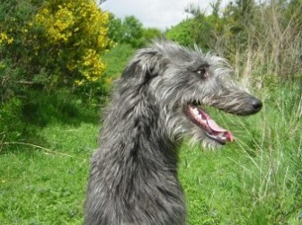
GRAN DANES
Ahora toca una raza muy famosa, los Great Dan (Gran Danés).
Estos perros son ideales para las casas familiares. Por lo general son muy amigables con otros animales (perros y gatos) y con ninos, no tienen problemas con extranos, pero aun así son muy territoriales. Por ello estos perros son ideales como guardianes.
Aunque estos perros suelen sufrir los mismos problemas de salud que otros perros gigantes, estos no suelen tener muchos problemas de salud genéticos y no requieren muchos cuidados especiales.
Como todos los perros requiere cierto entrenamiento, cosa que puede ser un desafío, pero con un perro que puede llegar a pesar más de 85 kg, es muy importante ensenarle modales caninos.
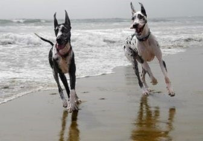
MASTIFF NAPOLITANO
El Mastiff Napolitano, aunque es muy parecido a al Mastiff convencional, hay algunas diferencias que tenemos que destacar. Es mucho más difícil de entrenar, y es muy receloso de la gente que no conoce.
Esto conlleva a estos perros a parecer agresivos, por esto perros se suelen recomendar a duenos con experiencia.
Además estos perros requieren algunos cuidados especiales particulares a la raza y sufren de muchos problemas de salud.
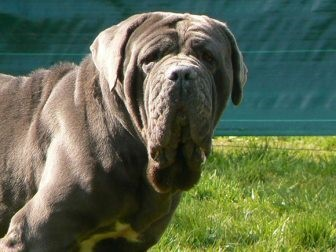
SAN BERNARDO
Los San Bernardo son uno de los perros gigantes más versátiles que puedes encontrar, aunque lleve tiempo entrenarlo, un San Bernardo puede aprender todo tipo de trucos.
Esta raza de perros grandes, por lo general se acostumbran muy rápido a nuevos miembros de la familia, sean otros perros, gatos o ninos.
Sorprendentemente los San Bernardo no requieren mucho ejercicio, ni una dieta muy abundante, aunque requiere muchos cuidados especiales, desde limpiarle las orejas, manicura (muy a menudo) y tienes que estar listo para limpiar babas, Muchas babas.
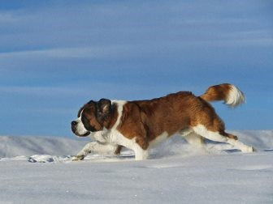
BLACK RUSSIAN TERRIER
Los Black Russian Terrier es una de las razas de peros grandes más desconocida y relativamente moderna.
Este perro fue criado durante la guerra fría en Russia como perro guardián. Al igual que el Mastiff Napolitano, este perro requiere un dueno con experiencia, y mucho entrenamiento. Es muy importante preparar un entrenamiento especial para que el Black Russian Terrier reconozca cuando alguien de su familia corre peligro o no.
Este perro es sobreprotector, y muy recelosos de extranos, esto puede conllevar muchos problemas para duenos novatos. Estos perros no suelen tener muchos problemas de salud, pero es importante que tenga cuidado con su dieta, estos perros son muy dados a tener problemas de sobre peso, especialmente si vive en la ciudad.
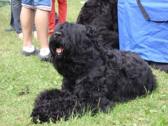
LEONBERGER
Leonberger es un perro grande, súper carinoso, y como los Scottish Deerhound tienen una dependencia muy fuerte de su familia. Sufrirá mucho si se queda solo mucho tiempo, si no se entrena bien, es posible que sufra ansiedad simplemente por dejarlo solo en una habitación vacía.
Con un Leonberger, tienes que estar listo para ser amado incondicionalmente.
Los Leonberger requieren mucho ejercicio, les encanta jugar en el agua, lodo y hacer agujeros por todo el jardín. ¡Este perro podrá patas para arriba cualquier casa! Además es muy patoso, por ello es importante que no lo dejes solo sin supervisión cuando este con un nino pequeno.
Un Leo no le hará dano apropósito, pero al igual que los Gran Danés, un coletazo puede doler, especialmente a un nino pequeno.
Lamentablemente estos perros tienen una expectativa de vida muy corta, 6 a 8 con un cuidado muy especial, sin este cuidado especial, este perro no llegara a los 6 anos.
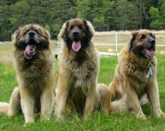
TERRANOVA
Los Newfoundland o terranova es un gigante tierno y dulce. Adora a su familia, y será amigable con los extranos que vea de confianza. Este perro es extremadamente territorial, y protegerá al último aliento a su familia y hogar. Como todos los perros territoriales, es importante entrenarlos adecuadamente.
Estos perros requieren algunos cuidados especiales, debido a su pelo de doble capa resistente al agua.
Tendrás que pasarle un peine de hierro una vez cada dos o tres días para remover el pelo muerto, además es posible que tengas que cortarle el pelo en verano. Con estos perros es imperativo hacer una revisión veterinaria cada un ano y una completa a los dos anos de edad.
Por suerte, o desgracia, los Newfoundland son muy inteligentes y estan catalogados entre una raza gigante o grande.
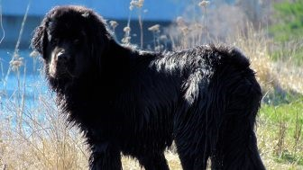
GREAT PYRENEES
Podrás reconocer un Great Pyrenees por su hermoso pelo blanco, suave y liso por naturaleza.
Es posible que reconozcas esta raza de perro por ser los guardianes caninos de la realeza francesa y de otras familias reales europeas.
Estos perros son muy inteligentes y muy cabeza duras, esto hace que sean muy difíciles de entrenar, cosa que es muy importante, no solo por su tamano, sino por su ferocidad ante cualquier tipo de agresión contra su familia o territorio.
Como te puedes imaginar, este perro requiere cuidados muy exhaustivos para mantener su pelo y es importante vigilar su dieta.
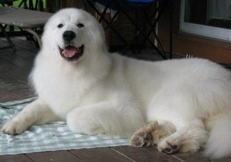
Con esto terminamos nuestro top 10 de las razas de perros grandes; si crees que nos hemos dejado alguno, no dudes mencionarlo en los comentarios, estaremos encantados de anadirlo.


{kind=link}